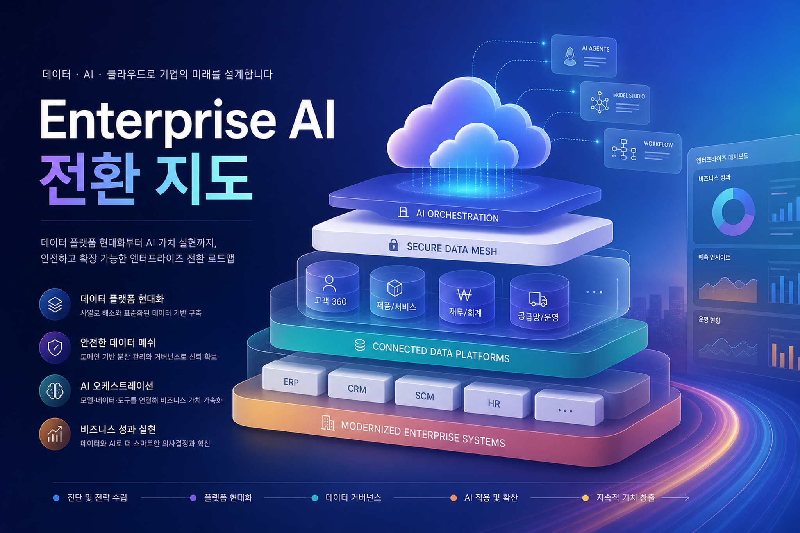
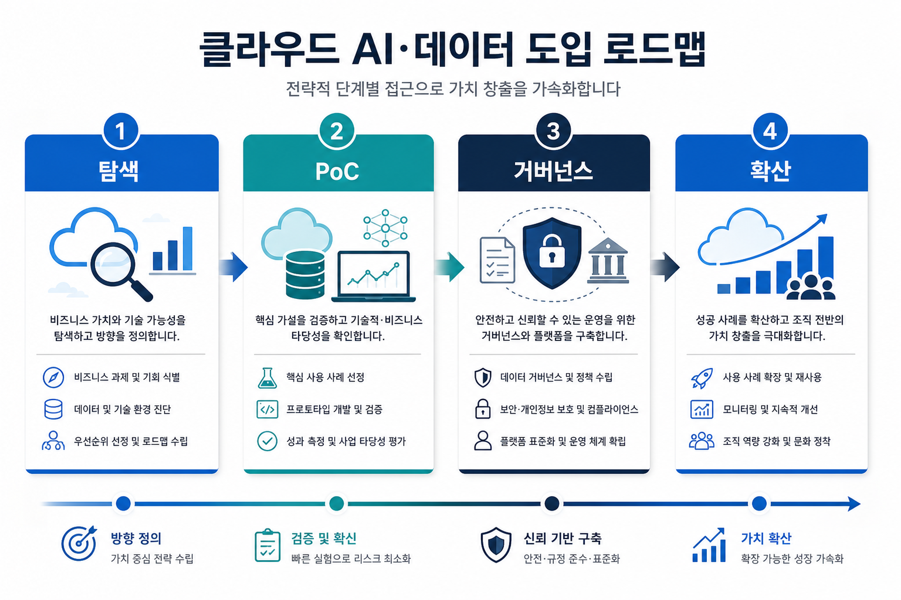
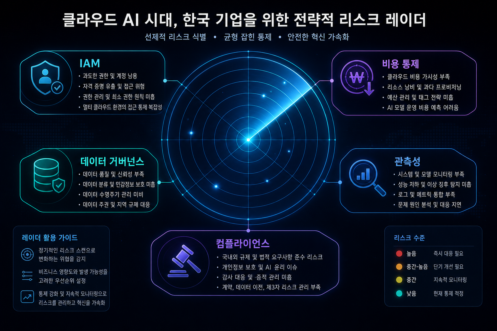

오늘의 한 줄 논지
Google Cloud의 최근 메시지는 모델 자체보다 데이터 기반, 보안 통제, 운영 자동화, 비용/거버넌스를 결합한 enterprise AI platform으로 무게중심이 이동하고 있음을 보여준다. 한국 기업은 “어떤 모델을 쓸 것인가”보다 “어떤 업무·데이터·권한 단위로 안전하게 확산할 것인가”를 먼저 설계해야 한다.
근거 범위: Google Cloud 블로그 일일 전략 HTML 입력 요약 - 20260525. 최근 24시간 내 GCP 소스 기반.
핵심 트렌드 분석
1
AI는 데이터 플랫폼 없이는 운영되지 않는다
Gemini/Vertex AI 계열의 가치는 BigQuery, Dataplex, Looker, Dataflow 같은 데이터 운영 체계와 묶일 때 커진다. AI PoC보다 데이터 품질·카탈로그·권한 모델이 선행 과제다.
2
보안은 사후 점검이 아니라 설계 입력이다
IAM, Identity-Aware Proxy, Security Command Center, Mandiant 신호는 agentic workflow가 늘수록 identity·logging·review gate가 플랫폼 기본값이 되어야 함을 시사한다.
3
클라우드 현대화는 AI 확산의 인프라 조건이다
GKE, Cloud Run, database modernization은 AI 애플리케이션을 실험에서 운영으로 끌어올리는 배포·관측·확장성 기반이다.

기업 적용 관점: 무엇을 해야 하나
① 업무 포트폴리오 선별
고객 응대, 지식 검색, 데이터 분석, 개발 생산성처럼 데이터와 권한 경계가 비교적 명확한 업무부터 시작한다.
② 플랫폼 표준화
모델·데이터·도구·권한·로그의 연결 방식을 표준화하지 않으면 PoC가 부서별 섬으로 남는다.
③ 거버넌스 내재화
검토자, 승인 흐름, 감사 로그, 비용 한도, 실패 대응 runbook을 제품 기능과 함께 설계한다.
④ 한국 기업 시사점
규제 산업·대기업 환경에서는 개인정보/내부정보 통제와 협력사 접근권한 관리가 adoption 속도를 결정한다.
수집 원문 신호
서비스/기술 적용 매트릭스
| 블로그 신호 | 언급/연관 기술 | 도입 전 확인 |
|---|---|---|
| Google Cloud 블로그 일일 전략 HTML 입력 요약 - 20260525 | Google Cloud | 확인 필요: 기능 상태·리전·가격·quota |

리스크·거버넌스 체크포인트
Identity & Access
Agent가 호출할 수 있는 API, 데이터셋, SaaS 도구를 최소권한으로 제한하고, 사람 승인 지점을 명확히 둔다.
Data Governance
민감정보 분류, 학습/검색/로그 저장 범위, 데이터 residency, retention 정책을 PoC 단계부터 문서화한다.
Cost & Reliability
토큰·쿼리·GPU/서빙 비용의 상한선을 업무 단위로 둔다. 장애 시 fallback과 수동 처리 절차가 있어야 한다.
실행 전략
- 2주 진단: AI 후보 업무와 데이터/권한 경계를 inventory화한다.
- 4주 PoC: 한 업무에서 Vertex AI/Gemini 또는 데이터 분석 기능을 제한된 사용자로 검증한다.
- 8주 운영화: IAM, logging, evaluation, cost dashboard, human review를 붙여 production pilot으로 전환한다.
- 분기 확산: 성공한 패턴을 템플릿화해 다른 부서로 복제한다.
이미지 프롬프트 기록
Image Prompt 1
- 목적: 기술 트렌드 맵
- 삽입 위치: hero 아래
- image2 prompt: A premium Korean executive technology blog illustration about Google Cloud enterprise AI, data platforms, and cloud modernization. Abstract cloud architecture, Gemini-colored gradients, secure data mesh, no logos, readable Korean visual title “Enterprise AI 전환 지도”, editorial magazine style, 16:9.
- 권장 비율: 16:9
- alt 텍스트: 기술 트렌드 맵
Image Prompt 2
- 목적: 기업 적용 로드맵
- 삽입 위치: 실행 전략 섹션
- image2 prompt: A clean executive infographic illustration in Korean showing a 4-step enterprise adoption roadmap for Google Cloud AI and data: 탐색, PoC, 거버넌스, 확산. Modern cards, cloud/data/security icons, no brand logos, high contrast, 16:9.
- 권장 비율: 16:9
- alt 텍스트: 기업 적용 로드맵
Image Prompt 3
- 목적: 거버넌스 리스크 레이더
- 삽입 위치: 리스크/거버넌스 섹션
- image2 prompt: A strategic risk radar illustration for Korean enterprises adopting cloud AI: IAM, data governance, cost control, observability, compliance. Dark premium background, luminous radar rings, readable Korean labels, no logos, 16:9.
- 권장 비율: 16:9
- alt 텍스트: 거버넌스 리스크 레이더